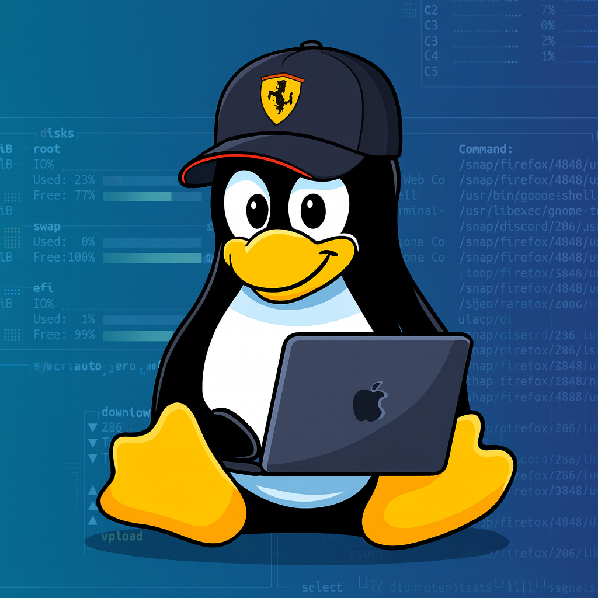

host = "ascii.theoboursy.fr"
img2ascii
A lightweight CLI written in Go that converts images into ASCII art directly from the terminal.

// Cloud Engineer
/**
* Welcome to my page. I'm a Cloud Engineer interested in
* IT in general. Here you'll find my GitHub and links to
* small tools I build in my free time.
*/
host = "ascii.theoboursy.fr"
A lightweight CLI written in Go that converts images into ASCII art directly from the terminal.
host = "portfolio.theoboursy.fr"
The cloud-native IaC behind this domain: tiny Go binaries on Cloud Run, near-zero cold start, and one-JSON-file extensibility, all tuned for the free tier.
host = "loadtest.theoboursy.fr"
A distributed load tester: Vegeta wrapped in Go on Scaleway serverless containers, fanning out parallel workers to burst thousands of req/s, then scaling to zero.
host = "monitoring.theoboursy.fr"
Serverless Grafana on AWS Lambda reading GCP metrics through Workload Identity Federation, no static keys, with RDS state and CloudFront TLS.
host = "dockeronline.theoboursy.fr"
A Master 1 mini-PaaS: deploy an image, Dockerfile or compose via the Docker SDK, with Traefik routing and automatic OVH DNS per subdomain.
host = "gopher.theoboursy.fr"
A Go image gallery on Cloud Run: uploads are cropped by a Cloud Function and shown in a live slider, behind an ultra-optimized multi-stage Dockerfile that ships on scratch.